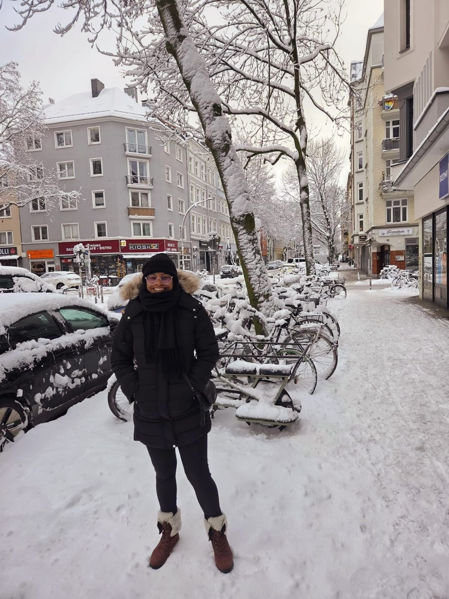
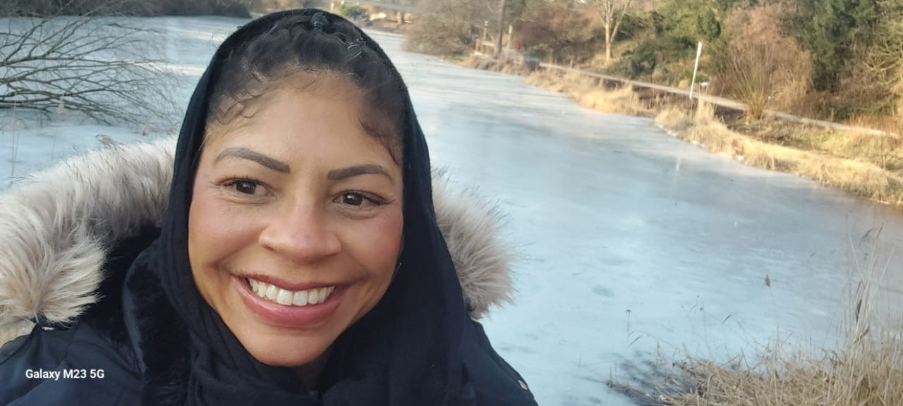
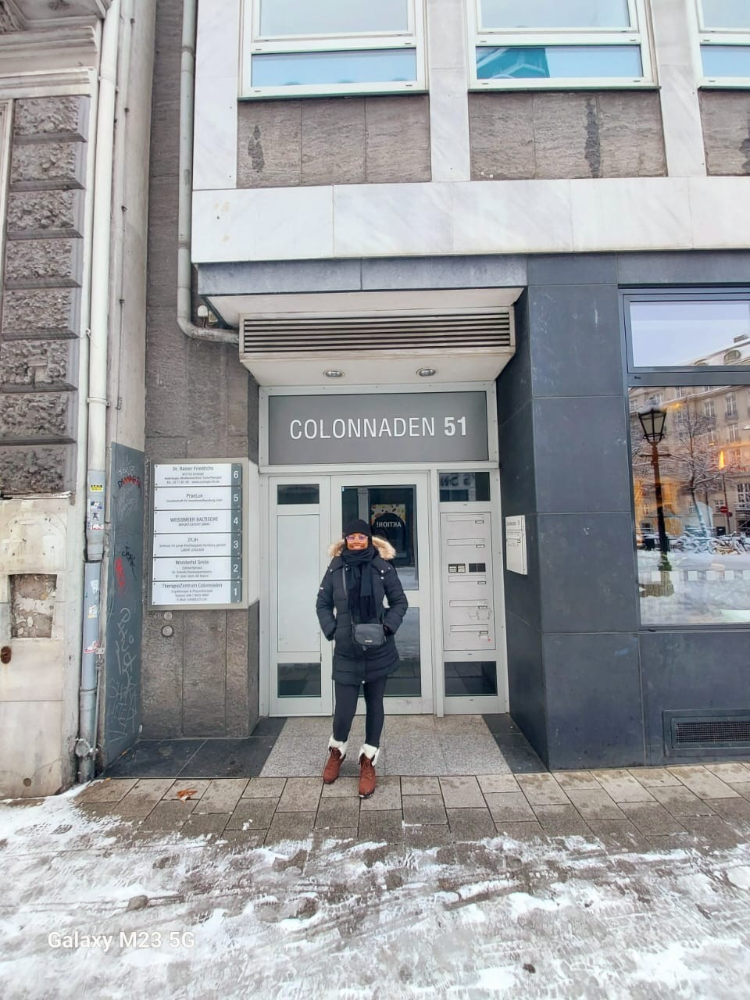
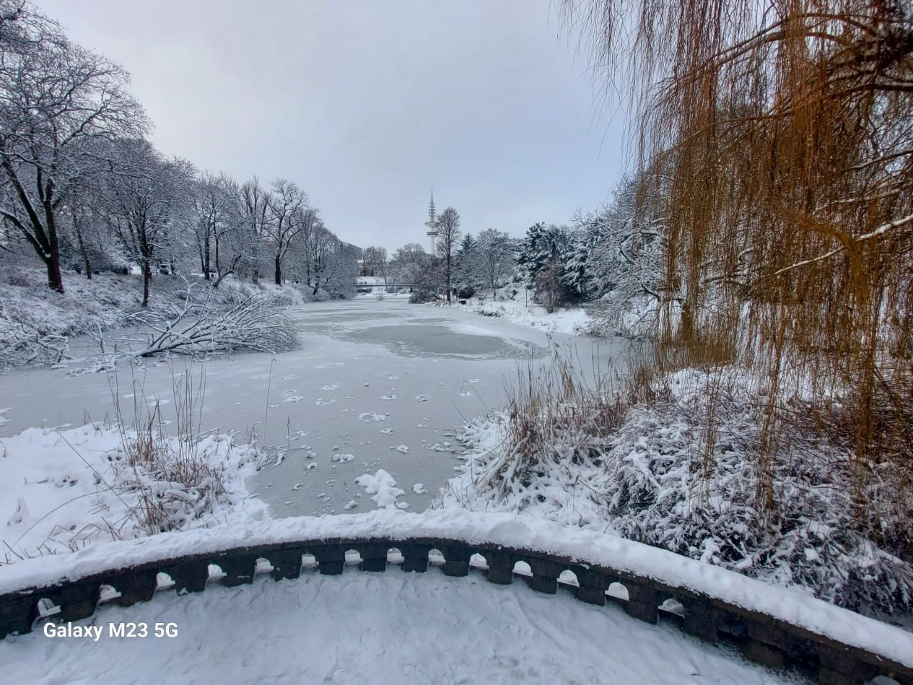
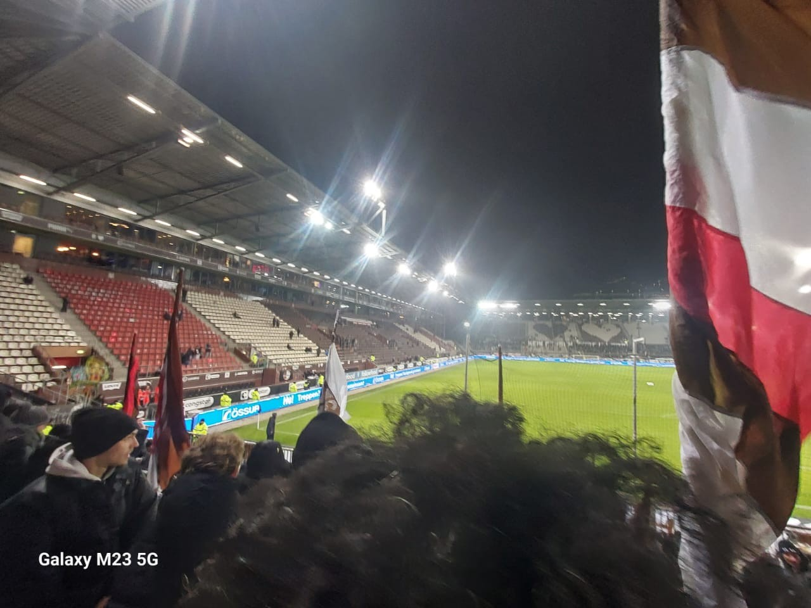
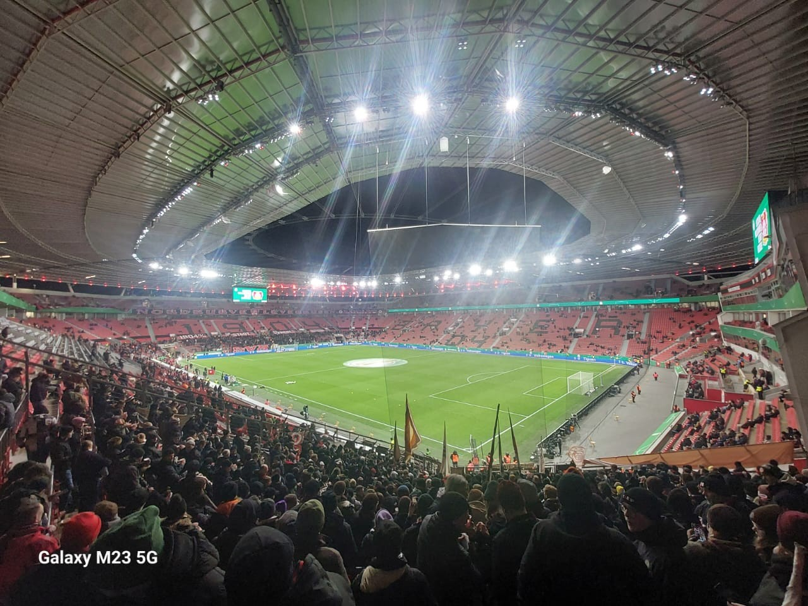
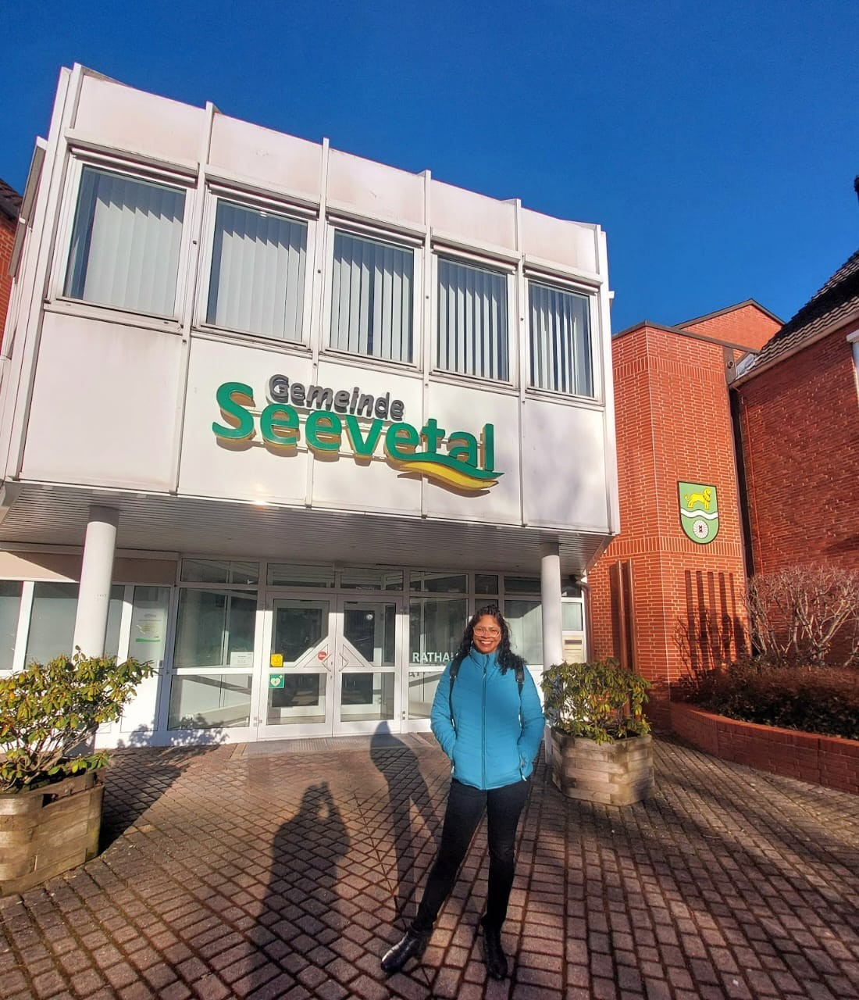
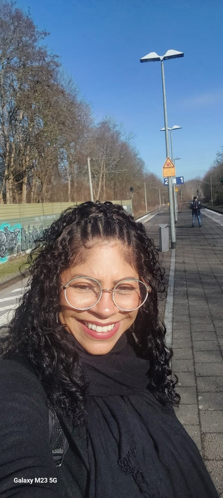
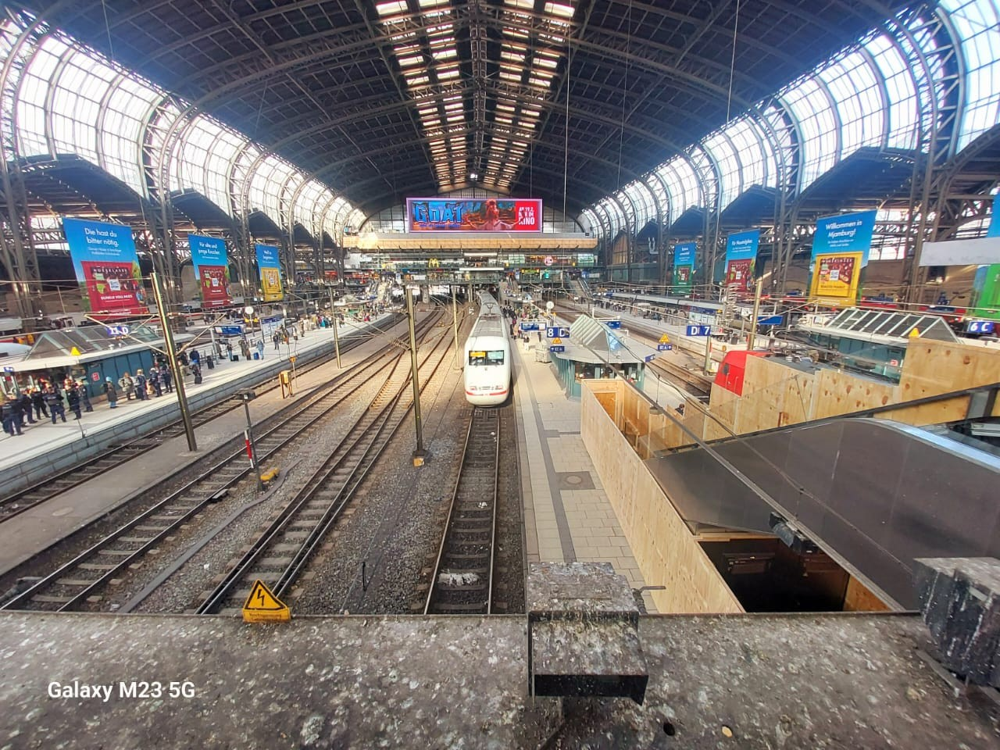
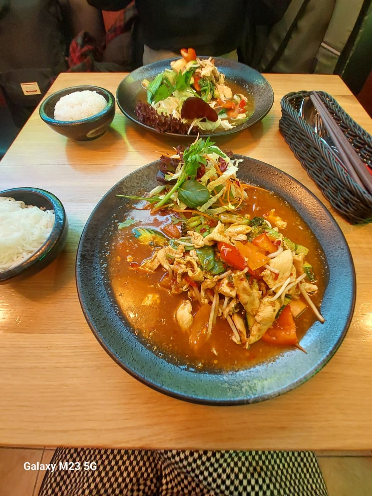

📅 Janeiro 2026
O início em Hamburgo, primeiras experiências e desafios.
Ler mêsBem-vindo ao meu blog! Aqui compartilho minha jornada vivendo na Alemanha.
Uma história em construção, mês após mês.
Desembarquei em Hamburgo no dia 1º de janeiro de 2026. Com um passaporte em mãos, um sonho e muita coragem, comecei uma nova fase da minha vida. Foram dias intensos de adaptação, descobertas e mudanças. Enfrentei temperaturas negativas, neve, muito frio e também algumas decepções. Minha rotina era simples e repetitiva: acordava às 7h30, tomava café, estudava, preparava o almoço e caminhava cerca de 30 minutos até o curso, atravessando um parque. No fim do dia, fazia o mesmo trajeto de volta — mais 30 minutos — e, já em casa, estudava um pouco mais, assistia a algum filme e dormia para recomeçar tudo no dia seguinte. Ainda me sentia insegura para realizar tarefas simples, como fazer compras ou interagir com outras pessoas. Por isso, passava a maior parte do tempo em casa e saía apenas para ir ao curso. Fiz poucos passeios e sempre acompanhada de um amigo. Uma das experiências mais marcantes foi assistir ao jogo entre St. Pauli e Leipzig, no Millerntor-Stadion. Foi uma noite muito especial. A energia dos torcedores era contagiante: animados, engajados e cheios de identidade. O St. Pauli é muito mais do que um clube de futebol — é um símbolo social e cultural, conhecido por seus valores progressistas, como o combate ao racismo, ao fascismo e ao sexismo, além do apoio à comunidade LGBTQ+ e a causas sociais. Apesar desse momento especial, janeiro foi, no geral, um mês desafiador. Foi um período marcado por dependência, insegurança e muitas frustrações. Essa frase resume bem o meu início: um começo difícil, mas necessário.
Foi um mês muito intenso emocionalmente. Tudo era novo e desconhecido, e isso trouxe medo e desconforto, mas também me ajudou a crescer e a desenvolver resiliência.
Aprendi que recomeçar exige muito mais do que coragem. Exige força nos dias em que você não tem nenhuma. Tive que deixar o sentimentalismo de lado, aprender a me virar sozinha, ser mais racional e prática. Apesar de ter recebido ajuda de amigos e conhecidos, existe um momento em que você entende: no final, você está sozinha em um país estranho, cercada de pessoas que falam uma língua que ainda não é sua.
Alguns registros da minha rotina em janeiro:






Esse mês começou de forma tranquila, muito parecida com o mês anterior. No início, fizemos uma viagem de carro até Leverkusen para assistir ao jogo entre St. Pauli e Bayer Leverkusen. Foi uma experiência muito marcante. Apesar da derrota do St. Pauli por 3x0, eu amei a experiência. Foram cerca de 5 horas de ida e mais 5 horas de volta, com muito frio e gelo na estrada. Porém, da metade para o final do mês, muitas coisas mudaram. O véu da ilusão caiu completamente, e eu precisei me mudar de um dia para o outro, me adaptando a uma nova realidade. Aprender a usar trem, metrô e ônibus passou a fazer parte da minha rotina. Mudei para uma cidade vizinha e minha rotina mudou totalmente. Antes, eu caminhava cerca de 30 minutos até o curso; agora, levo cerca de 1h30. Saio às 12h08, pego o trem, desembarco na Hauptbahnhof (estação central de Hamburgo), sigo de metrô e chego ao curso. Antes eu almoçava em casa tranquilamente, agora faço um lanche à beira do lago Binnenalster — um lugar lindo, um dos meus preferidos — enquanto espero o horário de ir para o curso. O caminho de volta também é variado: às vezes pego ônibus até a Hauptbahnhof e depois o trem para Hittfeld; outras vezes vou de S-Bahn até Harburg e, de lá, pego o trem até Hittfeld. Quando preciso fazer compras, vou até Harburg — uma cidade vizinha de Hamburgo, como Salvador e Lauro de Freitas — faço minhas compras e pego um ônibus que para em frente à casa onde estou morando. Essa é a melhor opção para não precisar andar muito carregando peso. Passei alguns perrengues até me adaptar a essa nova rotina. No primeiro dia voltando para casa, peguei o trem errado e acabei descendo em uma estação no meio do nada. Fiquei esperando cerca de uma hora no frio de -4°C até o próximo trem. Hoje consigo rir disso, mas naquele dia chorei de desespero. No primeiro dia também me perdi tentando encontrar a estação de metrô correta. Pedi ajuda a pessoas desconhecidas na rua, mas no final consegui me localizar. Também enfrentei dificuldades com o idioma. Muitas vezes o sistema de som anunciava atrasos ou mudanças de plataforma, e eu não entendia nada — apenas via as pessoas se movimentando rapidamente e seguia o fluxo. Em alguns momentos, o trem parava no meio do caminho, e eu ficava observando as reações dos passageiros sem saber se era atraso, cancelamento ou algum problema mais sério. A casa onde estou morando é grande, confortável e me faz sentir segura. O mês de fevereiro também trouxe novas amizades e pessoas boas dispostas a ajudar. Fiz alguns passeios com amigas — uma brasileira e uma indiana. Nesse período, também consegui fazer meu Anmeldung, o registro de residência necessário para questões burocráticas na Alemanha.
Foi um mês muito intenso, cheio de mudanças, e eu precisei lidar com tudo isso enquanto ainda tentava cuidar do meu emocional, que não estava bem. Quem via minhas fotos ensolaradas e sorridentes talvez não imaginasse o quanto estava chovendo e nublado dentro do meu coração. Os medos, inseguranças e frustrações ainda estavam presentes, mas eu escolhi continuar — e encontrei forças que nem sabia que tinha para seguir em frente.
No final desse mês, ainda me sentia triste e um pouco desamparada, mas já me sentia mais segura e independente. Aprendi a me locomover pela cidade e perdi o medo de fazer compras sozinha e de pedir informações na rua.
Alguns registros da minha rotina em fevereiro:






em construção.
Em construção.
Em construção
Alguns registros da minha rotina em março:
em construção.
Em construção.
Em construção
Alguns registros da minha rotina em abril:
em construção.
Em construção.
Em construção
Alguns registros da minha rotina em maio:

Olá… eu sou uma baiana de Salvador e mãe de um jovem de 18 anos. Minha vida sempre foi marcada por movimento, mudanças e recomeços. Cresci em Salvador, uma cidade que mora dentro de mim — com seu sol, sua praia, sua energia e sua forma leve de ver a vida. Vivi também por 7 anos em São Paulo, uma experiência que me transformou, me fortaleceu e me ensinou muito sobre independência e adaptação. Sou separada e sempre carreguei comigo uma força silenciosa de seguir em frente, mesmo quando a vida não era fácil. Trabalho na área da aviação, um ambiente que me fez aprender sobre responsabilidade, pessoas, despedidas e novos começos. Sempre gostei de viajar. Conhecer lugares, culturas e pessoas diferentes sempre despertou algo muito forte em mim: a curiosidade pela vida. Foi esse mesmo sentimento que me trouxe até a Alemanha, onde hoje estou vivendo uma das fases mais desafiadoras — e ao mesmo tempo mais transformadoras — da minha história. Aqui, longe do meu país, da minha família e da minha zona de conforto, estou aprendendo o idioma e, principalmente, aprendendo a me reencontrar em meio a tudo isso. Sou uma pessoa espontânea, sincera e profundamente sensível. Amo o sol, o calor e a praia — e talvez por isso o frio daqui tenha sido um dos meus maiores choques. Mas, de alguma forma, tenho aprendido a encontrar beleza até no que antes me assustava. Nem todos os dias são fáceis. Alguns são leves, outros pesados. Mas todos fazem parte de um processo de reconstrução pessoal. Este blog é o meu espaço de verdade. Aqui eu compartilho não só o que vejo, mas também o que sinto. Minhas experiências, minhas descobertas, minhas dores e minhas pequenas vitórias. Estou escrevendo um novo capítulo da minha vida — sem saber exatamente o final, mas com coragem de continuar cada página.